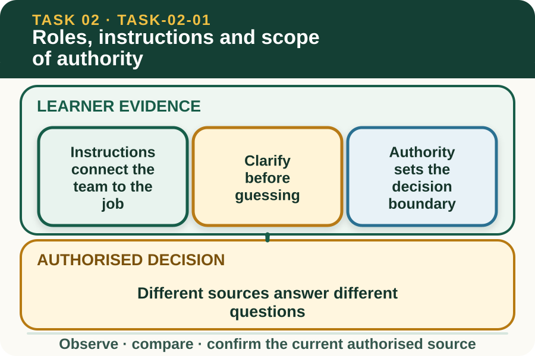
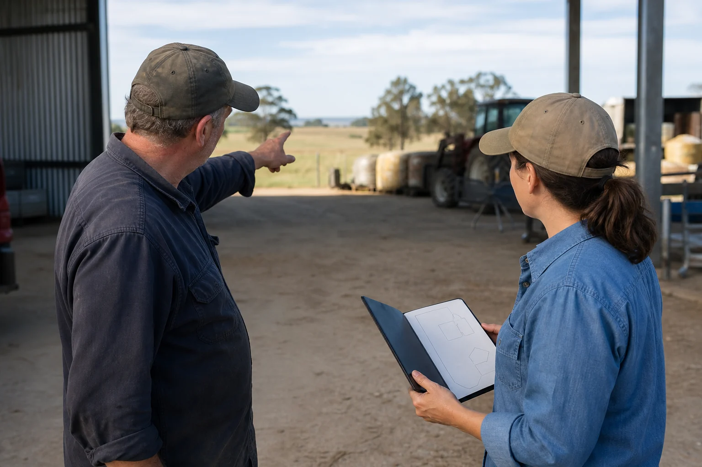

Learning purpose
Identify who directs work, what must be clarified and when a task must be referred.
Task 2 · Lesson 1 of 4
Identify who directs work, what must be clarified and when a task must be referred.
Learning purpose
Identify who directs work, what must be clarified and when a task must be referred.
Success criteria
Learning boundary
Supplementary learning and formative practice only. Current RTO assessment, local procedures and authorised supervision control real work.

A workplace instruction communicates an expected outcome, boundaries and information needed for a task. It may be verbal, written, visual or electronic, and more than one source may apply to the same job.
Effective workers do not rely on a single remembered phrase when the work also depends on a schedule, plan, label, procedure or supervisor update. They gather the required information and identify which source controls each decision.

Clarification is needed when the outcome, sequence, specification, timing, resources, safety control or reporting requirement is unclear. A precise question reduces the supervisor's effort because it names the gap rather than asking for the entire task again.
Closed-loop communication helps: restate the instruction in your own words, identify the point needing confirmation and listen for the agreed correction. This is especially useful where noise, distance, unfamiliar terms or changing work can distort a message.
A learner may be authorised to carry out routine work under supervision but not to change a specification, substitute equipment, approve access or direct another person. Authority comes from the workplace role and current instruction, not confidence or past experience elsewhere.
When a decision exceeds the role, pause at a sensible hold point and refer it. A good referral states what has been completed, what evidence is available, what is uncertain and what decision is required.
A work schedule may control timing, a job brief may define the outcome, a workplace procedure may control the method and a supervisor may resolve a change. An external industry source can provide background but does not automatically override the workplace's current authorised direction.
Source literacy means choosing a relevant, current and authorised source for the question. If two sources conflict, do not quietly choose the convenient one; identify the conflict and ask the designated person to resolve it.
Fictional worked example
Observed evidence: In a fictional nursery store, Mina's verbal instruction says to prepare eight labelled trays, but the electronic schedule lists six. Decision and reason: Guessing could create waste or leave the job incomplete, and Mina is not authorised to alter the order. Safe action: Mina tells the supervisor the two figures and asks which current source controls. Result: The supervisor confirms that the schedule was not updated and directs eight trays. Next check or record: Mina repeats the confirmed quantity and records the completed total in the authorised system.
Clear questions use relevant workplace language, an appropriate tone and enough context for the listener to respond. They avoid blame, sarcasm and long stories that hide the actual decision needed.
Respect also means allowing the other person to speak, checking understanding and adapting communication where language, hearing, literacy or cultural differences affect the exchange. Inclusion improves both safety and productivity.
Communication is incomplete until the agreed message affects the work. After clarification, update the plan, tell affected team members through the correct channel and complete any required record.
A website response can rehearse this sequence but is not the workplace record or an RTO submission. Use the current authorised student package and workplace system for any formal evidence.
Formative practice
Each option explains the consequence. These answers save only on this device.
Written application
Apply and keep a learning record
Use a fictional teacher-provided instruction. In pairs, practise restating the known details, asking one precise question and confirming the final direction. Do not use a real workplace dispute or assessment answer.
Learning record: A supplementary-learning script showing the complete closed loop and the relevant authority.
Lesson responses and the activity are formative learning only. Formal sufficiency and competence remain with the current RTO process.
Source basis: AHCWRK212 and AHCWRK213 Release 1 requirements for confirming work, gathering information, clarifying instructions and communicating with supervisors. Teacher-posted working-in-industry notes informed topic breadth only.